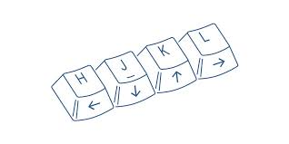
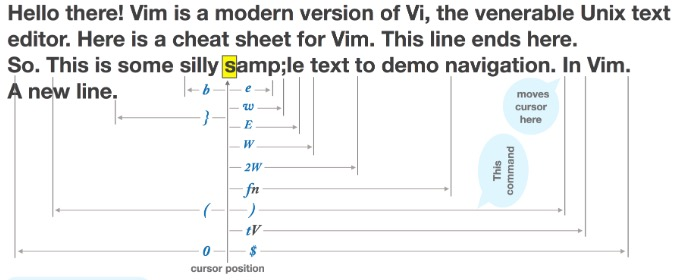

Created by ChengPeng
Introuction
Learn Vim Progressively
Vim As IDE
Enhance Your IDE
What
Why
History
Mode
Survive
Feel Comportable
Feel Better, Stronger, Faster
Use Superpowers of Vim
- i
- x
- :wq
- dd
- p
- hjkl
- :help
Survive
Feel Comportable
Feel Better, Stronger, Faster
Use Superpowers of Vim
- a
- o
- O
- cw
- 0
- ^
- $
- g
- /pattern
- P
- yy
- u
- <C-r>
Survive
Feel Comportable
Feel Better, Stronger, Faster
Use Superpowers of Vim
- .
- N<command>
- 2dd
- 3p
- 100idesu[ESC] -> . ->3.
- <start position><command><end position>
- 0y$
- dw, cw, diw
- NG
- gg
- G
- %, *, #
- e, w, E, W
Survive
Feel Comportable
Feel Better, Stronger, Faster
Use Superpowers of Vim
- 0
- ^
- $
- g_
- fa
- t,
- 3fa
- F and T
- split
- Macros
- Completion
Create vimrc file
Add some general settings
Set up plugin
Make vim look good
VimL
plugged
NERDTree & NERDTree tabs
vim-xxxxlanguage e.g. vim-javascript
easymotion
autopairs
youcompleteme
fzf
...
Vim operations
IdeaVim - IntelliJ IDEA, PyCharm, Android Studio, WebStorm...
Vscode (Awesome!)
Eclipse - vrapper
NetBeans - jvi